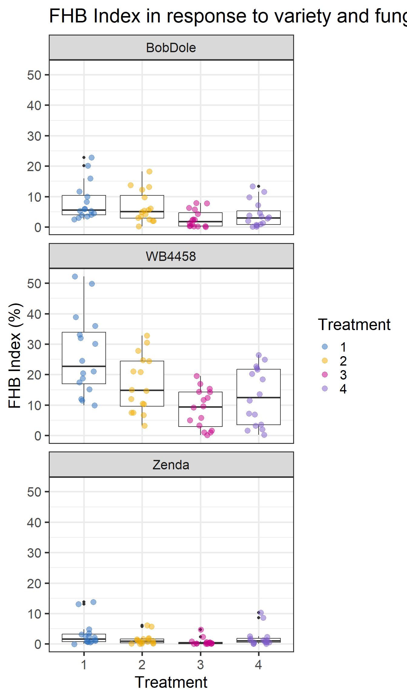

Data Wrangling
Read in Data
There are many ways to bring data into R. One of the simplist is using read.csv() to read in a csv file from your working directory.
FHB <- read.csv("DataSetFHB.csv") ## read.csv() will allow you to read in .csv files.
head(FHB) # head() lets examine the first few rows of data## YEAR LOC ENV REP VAR TRT TW YLD INC SEV IND FDK DON
## 1 2019 Belleville BEL_19 1 WB4458 1 50.20 68.47 48 75 36.00 20 2.50
## 2 2019 Belleville BEL_19 1 WB4458 2 50.61 64.56 30 50 15.00 30 3.90
## 3 2019 Belleville BEL_19 1 WB4458 3 53.63 66.71 30 65 19.50 30 3.00
## 4 2019 Belleville BEL_19 1 WB4458 4 54.03 81.26 36 60 21.60 8 1.80
## 5 2019 Belleville BEL_19 1 BobDole 1 55.57 96.57 12 25 3.00 5 0.80
## 6 2019 Belleville BEL_19 1 BobDole 2 58.41 116.72 5 5 0.25 5 0.82
Data Wrangling
In this short workshop we will focus on Tidyverse. Tidyverse is a “package of packages” that includes many tools for data organization and visualization. All of the packages are easy to use together, because they use the same code grammer. Today we will focus mostly on the packages “ggplot2” and “dplyr” which are useful for graphing and data manipulation.
library(tidyverse)
FHB <- as_tibble(FHB) #a tibble is a data frames that works well with the tidyverse
FHB## # A tibble: 192 × 13
## YEAR LOC ENV REP VAR TRT TW YLD INC SEV IND FDK DON
## <int> <chr> <chr> <int> <chr> <int> <dbl> <dbl> <dbl> <dbl> <dbl> <dbl> <dbl>
## 1 2019 Bell… BEL_… 1 WB44… 1 50.2 68.5 48 75 36 20 2.5
## 2 2019 Bell… BEL_… 1 WB44… 2 50.6 64.6 30 50 15 30 3.9
## 3 2019 Bell… BEL_… 1 WB44… 3 53.6 66.7 30 65 19.5 30 3
## 4 2019 Bell… BEL_… 1 WB44… 4 54.0 81.3 36 60 21.6 8 1.8
## 5 2019 Bell… BEL_… 1 BobD… 1 55.6 96.6 12 25 3 5 0.8
## 6 2019 Bell… BEL_… 1 BobD… 2 58.4 117. 5 5 0.25 5 0.82
## 7 2019 Bell… BEL_… 1 BobD… 3 59.4 111. 5 5 0.25 1 0.56
## 8 2019 Bell… BEL_… 1 BobD… 4 60.4 113. 7 40 2.8 3 0.55
## 9 2019 Bell… BEL_… 1 Zenda 1 54.4 79.3 5 50 2.5 4 1.4
## 10 2019 Bell… BEL_… 1 Zenda 2 61.4 94.8 1 5 0.05 3 0.45
## # ℹ 182 more rows## Rows: 192
## Columns: 13
## $ YEAR <int> 2019, 2019, 2019, 2019, 2019, 2019, 2019, 2019, 2019, 2019, 2019,…
## $ LOC <chr> "Belleville", "Belleville", "Belleville", "Belleville", "Bellevil…
## $ ENV <chr> "BEL_19", "BEL_19", "BEL_19", "BEL_19", "BEL_19", "BEL_19", "BEL_…
## $ REP <int> 1, 1, 1, 1, 1, 1, 1, 1, 1, 1, 1, 1, 2, 2, 2, 2, 2, 2, 2, 2, 2, 2,…
## $ VAR <chr> "WB4458", "WB4458", "WB4458", "WB4458", "BobDole", "BobDole", "Bo…
## $ TRT <int> 1, 2, 3, 4, 1, 2, 3, 4, 1, 2, 3, 4, 1, 2, 3, 4, 1, 2, 3, 4, 1, 2,…
## $ TW <dbl> 50.20, 50.61, 53.63, 54.03, 55.57, 58.41, 59.38, 60.40, 54.37, 61…
## $ YLD <dbl> 68.47, 64.56, 66.71, 81.26, 96.57, 116.72, 110.53, 112.91, 79.30,…
## $ INC <dbl> 48, 30, 30, 36, 12, 5, 5, 7, 5, 1, 2, 3, 35, 15, 19, 27, 9, 7, 3,…
## $ SEV <dbl> 75, 50, 65, 60, 25, 5, 5, 40, 50, 5, 5, 40, 70, 50, 75, 75, 50, 5…
## $ IND <dbl> 36.00, 15.00, 19.50, 21.60, 3.00, 0.25, 0.25, 2.80, 2.50, 0.05, 0…
## $ FDK <dbl> 20, 30, 30, 8, 5, 5, 1, 3, 4, 3, 3, 4, 23, 12, 10, 7, 8, 3, 3, 1,…
## $ DON <dbl> 2.50, 3.90, 3.00, 1.80, 0.80, 0.82, 0.56, 0.55, 1.40, 0.45, 0.59,…## Rows: 192
## Columns: 13
## $ YEAR <int> 2019, 2019, 2019, 2019, 2019, 2019, 2019, 2019, 2019, 2019, 2019,…
## $ LOC <chr> "Belleville", "Belleville", "Belleville", "Belleville", "Bellevil…
## $ ENV <chr> "BEL_19", "BEL_19", "BEL_19", "BEL_19", "BEL_19", "BEL_19", "BEL_…
## $ REP <int> 1, 1, 1, 1, 1, 1, 1, 1, 1, 1, 1, 1, 2, 2, 2, 2, 2, 2, 2, 2, 2, 2,…
## $ VAR <chr> "WB4458", "WB4458", "WB4458", "WB4458", "BobDole", "BobDole", "Bo…
## $ TRT <fct> 1, 2, 3, 4, 1, 2, 3, 4, 1, 2, 3, 4, 1, 2, 3, 4, 1, 2, 3, 4, 1, 2,…
## $ TW <dbl> 50.20, 50.61, 53.63, 54.03, 55.57, 58.41, 59.38, 60.40, 54.37, 61…
## $ YLD <dbl> 68.47, 64.56, 66.71, 81.26, 96.57, 116.72, 110.53, 112.91, 79.30,…
## $ INC <dbl> 48, 30, 30, 36, 12, 5, 5, 7, 5, 1, 2, 3, 35, 15, 19, 27, 9, 7, 3,…
## $ SEV <dbl> 75, 50, 65, 60, 25, 5, 5, 40, 50, 5, 5, 40, 70, 50, 75, 75, 50, 5…
## $ IND <dbl> 36.00, 15.00, 19.50, 21.60, 3.00, 0.25, 0.25, 2.80, 2.50, 0.05, 0…
## $ FDK <dbl> 20, 30, 30, 8, 5, 5, 1, 3, 4, 3, 3, 4, 23, 12, 10, 7, 8, 3, 3, 1,…
## $ DON <dbl> 2.50, 3.90, 3.00, 1.80, 0.80, 0.82, 0.56, 0.55, 1.40, 0.45, 0.59,…Filtering
It is often important to filter out parts of a data set. For example, you may want to look at a single time point within a data set. For that, filter() is useful. This is also a good time to introduce the concept of the “pipe” which is either “|>” or “%>%”. Note: “|>” was introduced as the new pipe in R in 2021. Let’s look at an example where we are filtering out one environment of our field data:
FHB |> filter(ENV == "BEL_19") ## this new data frame won't save unless we assign it to a new object## # A tibble: 48 × 13
## YEAR LOC ENV REP VAR TRT TW YLD INC SEV IND FDK DON
## <int> <chr> <chr> <int> <chr> <fct> <dbl> <dbl> <dbl> <dbl> <dbl> <dbl> <dbl>
## 1 2019 Bell… BEL_… 1 WB44… 1 50.2 68.5 48 75 36 20 2.5
## 2 2019 Bell… BEL_… 1 WB44… 2 50.6 64.6 30 50 15 30 3.9
## 3 2019 Bell… BEL_… 1 WB44… 3 53.6 66.7 30 65 19.5 30 3
## 4 2019 Bell… BEL_… 1 WB44… 4 54.0 81.3 36 60 21.6 8 1.8
## 5 2019 Bell… BEL_… 1 BobD… 1 55.6 96.6 12 25 3 5 0.8
## 6 2019 Bell… BEL_… 1 BobD… 2 58.4 117. 5 5 0.25 5 0.82
## 7 2019 Bell… BEL_… 1 BobD… 3 59.4 111. 5 5 0.25 1 0.56
## 8 2019 Bell… BEL_… 1 BobD… 4 60.4 113. 7 40 2.8 3 0.55
## 9 2019 Bell… BEL_… 1 Zenda 1 54.4 79.3 5 50 2.5 4 1.4
## 10 2019 Bell… BEL_… 1 Zenda 2 61.4 94.8 1 5 0.05 3 0.45
## # ℹ 38 more rows## # A tibble: 48 × 13
## YEAR LOC ENV REP VAR TRT TW YLD INC SEV IND FDK DON
## <int> <chr> <chr> <int> <chr> <fct> <dbl> <dbl> <dbl> <dbl> <dbl> <dbl> <dbl>
## 1 2019 Bell… BEL_… 1 WB44… 1 50.2 68.5 48 75 36 20 2.5
## 2 2019 Bell… BEL_… 1 WB44… 2 50.6 64.6 30 50 15 30 3.9
## 3 2019 Bell… BEL_… 1 WB44… 3 53.6 66.7 30 65 19.5 30 3
## 4 2019 Bell… BEL_… 1 WB44… 4 54.0 81.3 36 60 21.6 8 1.8
## 5 2019 Bell… BEL_… 1 BobD… 1 55.6 96.6 12 25 3 5 0.8
## 6 2019 Bell… BEL_… 1 BobD… 2 58.4 117. 5 5 0.25 5 0.82
## 7 2019 Bell… BEL_… 1 BobD… 3 59.4 111. 5 5 0.25 1 0.56
## 8 2019 Bell… BEL_… 1 BobD… 4 60.4 113. 7 40 2.8 3 0.55
## 9 2019 Bell… BEL_… 1 Zenda 1 54.4 79.3 5 50 2.5 4 1.4
## 10 2019 Bell… BEL_… 1 Zenda 2 61.4 94.8 1 5 0.05 3 0.45
## # ℹ 38 more rowsSummarise
You can also summarize data using dplyr summarise().
avgIND <- FHB |> ## data set to take an action on
group_by(VAR, TRT) |> ## how I want my data grouped. Here I will summarize for each treatment, by variety
summarise(meanIND = mean(IND)) ## meanIND is the name for my new, summarize column in my data set. I will use mean() to summarize disease INDEX. ## `summarise()` has grouped output by 'VAR'. You can override using the `.groups`
## argument.## # A tibble: 12 × 3
## # Groups: VAR [3]
## VAR TRT meanIND
## <chr> <fct> <dbl>
## 1 BobDole 1 8.29
## 2 BobDole 2 6.65
## 3 BobDole 3 2.67
## 4 BobDole 4 4.09
## 5 WB4458 1 26.4
## 6 WB4458 2 16.8
## 7 WB4458 3 8.82
## 8 WB4458 4 12.9
## 9 Zenda 1 3.20
## 10 Zenda 2 1.49
## 11 Zenda 3 0.685
## 12 Zenda 4 2.02avgIND <- FHB |> ## data set to take an action on
group_by(VAR) |> ## how I want my data grouped. Here I will summarize across variety
summarise(meanIND = mean(IND, na.rm = TRUE)) ## meanIND is the name for my new, summarize column in my data set. I will use mean() to summarize disease INDEX. Remove nas.
avgIND## # A tibble: 3 × 2
## VAR meanIND
## <chr> <dbl>
## 1 BobDole 5.43
## 2 WB4458 16.2
## 3 Zenda 1.85Re-arrange data
- mutate()
- select()
- rename()
- relocate()
Mutate
You can use mutate() to calculate a new column in your dataframe based on values in the existing data
FHB |>
mutate(
INDEX = (INC*SEV)/100,
.after = 2 ## put the new column after the second column so we can see it more easily.
)## # A tibble: 192 × 14
## YEAR LOC INDEX ENV REP VAR TRT TW YLD INC SEV IND FDK
## <int> <chr> <dbl> <chr> <int> <chr> <fct> <dbl> <dbl> <dbl> <dbl> <dbl> <dbl>
## 1 2019 Bell… 36 BEL_… 1 WB44… 1 50.2 68.5 48 75 36 20
## 2 2019 Bell… 15 BEL_… 1 WB44… 2 50.6 64.6 30 50 15 30
## 3 2019 Bell… 19.5 BEL_… 1 WB44… 3 53.6 66.7 30 65 19.5 30
## 4 2019 Bell… 21.6 BEL_… 1 WB44… 4 54.0 81.3 36 60 21.6 8
## 5 2019 Bell… 3 BEL_… 1 BobD… 1 55.6 96.6 12 25 3 5
## 6 2019 Bell… 0.25 BEL_… 1 BobD… 2 58.4 117. 5 5 0.25 5
## 7 2019 Bell… 0.25 BEL_… 1 BobD… 3 59.4 111. 5 5 0.25 1
## 8 2019 Bell… 2.8 BEL_… 1 BobD… 4 60.4 113. 7 40 2.8 3
## 9 2019 Bell… 2.5 BEL_… 1 Zenda 1 54.4 79.3 5 50 2.5 4
## 10 2019 Bell… 0.05 BEL_… 1 Zenda 2 61.4 94.8 1 5 0.05 3
## # ℹ 182 more rows
## # ℹ 1 more variable: DON <dbl>Select
This is another option for subsetting out our data.
## # A tibble: 192 × 3
## VAR TRT YLD
## <chr> <fct> <dbl>
## 1 WB4458 1 68.5
## 2 WB4458 2 64.6
## 3 WB4458 3 66.7
## 4 WB4458 4 81.3
## 5 BobDole 1 96.6
## 6 BobDole 2 117.
## 7 BobDole 3 111.
## 8 BobDole 4 113.
## 9 Zenda 1 79.3
## 10 Zenda 2 94.8
## # ℹ 182 more rowsRename
Sometimes it can be useful to rename our columns without going back to the origional file.
## # A tibble: 192 × 13
## YEAR LOC ENV REP Variety TRT TW YLD INC SEV IND FDK
## <int> <chr> <chr> <int> <chr> <fct> <dbl> <dbl> <dbl> <dbl> <dbl> <dbl>
## 1 2019 Bellevil… BEL_… 1 WB4458 1 50.2 68.5 48 75 36 20
## 2 2019 Bellevil… BEL_… 1 WB4458 2 50.6 64.6 30 50 15 30
## 3 2019 Bellevil… BEL_… 1 WB4458 3 53.6 66.7 30 65 19.5 30
## 4 2019 Bellevil… BEL_… 1 WB4458 4 54.0 81.3 36 60 21.6 8
## 5 2019 Bellevil… BEL_… 1 BobDole 1 55.6 96.6 12 25 3 5
## 6 2019 Bellevil… BEL_… 1 BobDole 2 58.4 117. 5 5 0.25 5
## 7 2019 Bellevil… BEL_… 1 BobDole 3 59.4 111. 5 5 0.25 1
## 8 2019 Bellevil… BEL_… 1 BobDole 4 60.4 113. 7 40 2.8 3
## 9 2019 Bellevil… BEL_… 1 Zenda 1 54.4 79.3 5 50 2.5 4
## 10 2019 Bellevil… BEL_… 1 Zenda 2 61.4 94.8 1 5 0.05 3
## # ℹ 182 more rows
## # ℹ 1 more variable: DON <dbl>Relocate
It can be useful to move columns around in our data frame.
FHB |>
relocate(YEAR:REP, .after = TRT) ## here we move the columns from year to rep to after the TRT column ## # A tibble: 192 × 13
## VAR TRT YEAR LOC ENV REP TW YLD INC SEV IND FDK DON
## <chr> <fct> <int> <chr> <chr> <int> <dbl> <dbl> <dbl> <dbl> <dbl> <dbl> <dbl>
## 1 WB44… 1 2019 Bell… BEL_… 1 50.2 68.5 48 75 36 20 2.5
## 2 WB44… 2 2019 Bell… BEL_… 1 50.6 64.6 30 50 15 30 3.9
## 3 WB44… 3 2019 Bell… BEL_… 1 53.6 66.7 30 65 19.5 30 3
## 4 WB44… 4 2019 Bell… BEL_… 1 54.0 81.3 36 60 21.6 8 1.8
## 5 BobD… 1 2019 Bell… BEL_… 1 55.6 96.6 12 25 3 5 0.8
## 6 BobD… 2 2019 Bell… BEL_… 1 58.4 117. 5 5 0.25 5 0.82
## 7 BobD… 3 2019 Bell… BEL_… 1 59.4 111. 5 5 0.25 1 0.56
## 8 BobD… 4 2019 Bell… BEL_… 1 60.4 113. 7 40 2.8 3 0.55
## 9 Zenda 1 2019 Bell… BEL_… 1 54.4 79.3 5 50 2.5 4 1.4
## 10 Zenda 2 2019 Bell… BEL_… 1 61.4 94.8 1 5 0.05 3 0.45
## # ℹ 182 more rowsGraphing
Here we will walk through the basics of creating graphs with ggplot2. There are extensive options available within the ggplot2 framework. Would encourage you to explore the vast online documentation on the subject. Here we will aim to become familiar with the logic behind ggplot2 graphs.
ggplot(data = FHB, aes(x = TRT, y = IND)) +
geom_boxplot() +
geom_jitter(aes(color = TRT), size = 3, width = 0.2, alpha = .5) +
facet_wrap(~VAR, ncol = 1) +
scale_color_bmj() +
labs(title = "FHB Index in response to variety and fungicide",
x = "Treatment",
y = "FHB Index (%)",
color = "Treatment") +
theme(
panel.background = element_blank() ,
panel.grid.major = element_blank(),
panel.border = element_rect(colour = "black", fill = NA) ,
axis.text.y = element_text(colour = "black"),
axis.text.x = element_text(colour = "black"),
title = element_text(face = "bold", size = 13),
legend.key = element_rect(fill = "white"),
legend.text = element_text(colour = "black", size=12),
strip.text.x = element_text(hjust =0.01, face = "bold", size = 14),
strip.background = element_blank())the ggplot fungicide is “buildable”

Now we can tell ggplot what type of graph we want. Let’s start with a boxplot.
Violin plots are similar. We can layer elements. We can also adjust the width of the elements.
Here we can make a more simple bar chart and let ggplot know that we want to summarize the data (will default to the mean).
## No summary function supplied, defaulting to `mean_se()`Here we can layer points on our boxplot.
It is often useful to “jitter” the points for easier visualization.
ggplot(data = FHB, aes(x = TRT, y = IND)) +
geom_boxplot() +
geom_jitter() # layer jittered points on top of our box plotWe can start to adjust the look. Notice that size affects the size of the points, width tells us how wide our points go. The alpha allows us to make the points transparent. Try playing around with those numbers.
ggplot(data = FHB, aes(x = TRT, y = IND)) +
geom_boxplot() +
geom_jitter(aes(color = TRT), size = 3, width = 0.2, alpha = .5) ## adjust the look of the points. Facet can be useful when we have logical groups to our data like timepoints or treatments. Here we can group our fungicide treatments by variety.
ggplot(data = FHB, aes(x = TRT, y = IND)) +
geom_boxplot() +
geom_jitter(aes(color = TRT), size = 3, width = 0.2, alpha = .5) +
facet_wrap(~VAR, ncol = 1) #facetThere are many ways to adjust colors of a graph. Here, let’s change the color of the points. Here I chose random colors. R knows certain colors and there are good lists online. R can also read hex codes.
ggplot(data = FHB, aes(x = TRT, y = IND)) +
geom_boxplot() +
geom_jitter(aes(color = TRT), size = 3, width = 0.2, alpha = .5) + # color specified here
facet_wrap(~VAR, ncol = 1) +
scale_color_manual(values = c("purple", "green", "pink", "orange")) #set color of points Packages exist that have pre-determined color palettes. Here we use the library ggsci and a palette that matches the journal bmj. There are many options available. Would you like to test a few?
library(ggsci)
ggplot(data = FHB, aes(x = TRT, y = IND)) +
geom_boxplot() +
geom_jitter(aes(color = TRT), size = 3, width = 0.2, alpha = .5) +
facet_wrap(~VAR, ncol = 1) +
scale_color_bmj()ggplot has a few set themes that change the overall look of our plot. Here we use “theme_bw”.
ggplot(data = FHB, aes(x = TRT, y = IND)) +
geom_boxplot() +
geom_jitter(aes(color = TRT), size = 3, width = 0.2, alpha = .5) +
facet_wrap(~VAR, ncol = 1) +
scale_color_bmj() +
theme_bw()We often want to customize our plot labels.
library(ggsci)
ggplot(data = FHB, aes(x = TRT, y = IND)) +
geom_boxplot() +
geom_jitter(aes(color = TRT), size = 3, width = 0.2, alpha = .5) +
facet_wrap(~VAR, ncol = 1) +
scale_color_bmj() +
theme_bw(base_size = 20) + # set text size
labs(title = "FHB Index in response to variety and fungicide",
x = "Treatment",
y = "FHB Index (%)",
color = "Treatment") 
We can use theme() to change many aspects of the graph instead of (or in addtion to) using the preset themes like theme_bw().
ggplot(data = FHB, aes(x = TRT, y = IND)) +
geom_boxplot() +
geom_jitter(aes(color = TRT), size = 3, width = 0.2, alpha = .5) +
facet_wrap(~VAR, ncol = 1) +
scale_color_bmj() +
labs(title = "FHB Index in response to variety and fungicide",
x = "Treatment",
y = "FHB Index (%)",
color = "Treatment") +
theme(
panel.background = element_blank() ,
panel.grid.major = element_blank(),
panel.border = element_rect(colour = "black", fill = NA) ,
axis.text.y = element_text(colour = "black"),
axis.text.x = element_text(colour = "black"),
title = element_text(face = "bold", size = 13),
legend.key = element_rect(fill = "white"),
legend.text = element_text(colour = "black", size=12),
strip.text.x = element_text(hjust =0.01, face = "bold", size = 14),
strip.background = element_blank())Final note: sometimes it is necessary to bring together two graphs and to add letter annotation (A, B, etc.). The package ‘ggpubr’ is great for that application.